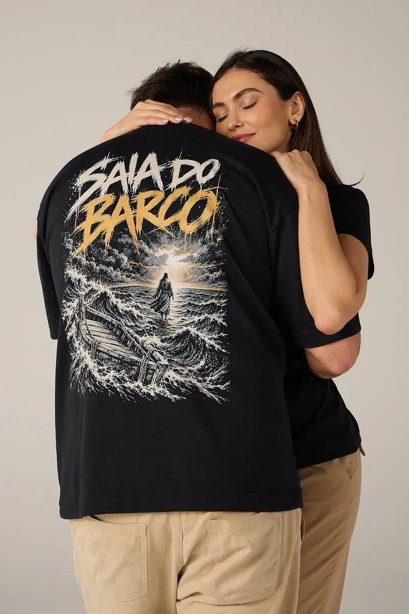

streetwear com propósito
Sê Tu.
Camisetas cristãs em edição limitada
Não quem o mundo quer que você seja.
Mas quem Deus disse que você é.
edição limitada
As peças
Coleções
escolha a sua
o que a gente veste
Não quem o mundo quer que você seja. Não quem o medo moldou. Mas quem Deus disse que você é, antes do mundo falar mais alto.
A Sê Tu nasceu da convicção de que cada pessoa foi formada por Deus de modo único, e criada para algo que ninguém mais no mundo pode fazer do jeito que ela faz. Roupa é só o meio. O propósito é lembrar você de quem você é.
- Identidadecomeça no que Deus diz sobre você
- Propósitoamor sem julgamento, sem pregação forçada
- Edição limitadapoucas unidades por tamanho
como funciona
Pedir é simples.
Sem cadastro e sem pagar no site. Você escolhe, manda o pedido pronto no WhatsApp e a gente combina o resto, de pessoa para pessoa.
- 01
Escolha a sua
Veja as peças, selecione cor e tamanho e monte a sacola.
- 02
Envie pelo WhatsApp
Com um toque, o pedido já vai formatado na conversa com a gente.
- 03
Combine com a gente
Confirmamos estoque, frete e pagamento, e separamos a sua peça.
- Retirada em Camboriú/SC
- Envio pelos Correios
- Edição limitada
dúvidas
Perguntas frequentes
As camisetas da Sê Tu são cristãs?
Sim. A Sê Tu é uma marca de streetwear cristão: estampas feitas para lembrar quem Deus disse que você é, com a beleza em primeiro lugar e a mensagem dentro.
Como faço um pedido?
Escolha a peça, a cor e o tamanho, monte a sacola e toque em “Enviar pedido pelo WhatsApp”. O pedido já vai pronto na conversa, e a gente confirma estoque, frete e pagamento com você.
Como funciona a entrega?
Você pode retirar em Camboriú/SC ou receber pelos Correios, com o frete combinado no WhatsApp.
Como é o pagamento?
Aceitamos PIX, cartão de crédito e cartão de débito, por link de pagamento. Depois que confirmamos o seu pedido no WhatsApp, enviamos o link para você pagar com a forma que preferir. O site não coleta dados de cartão.
O que significa edição limitada?
Cada estampa é produzida em poucas unidades por tamanho. Por isso o estoque mostrado no site é informativo, e a disponibilidade é confirmada na conversa.
fale com a gente
Qual é a sua digital?
Tire dúvidas, descubra o seu tamanho e garanta a sua peça antes que ela acabe. A conversa é direta, de pessoa para pessoa.
- Resposta direta no WhatsApp
- Edição limitada
